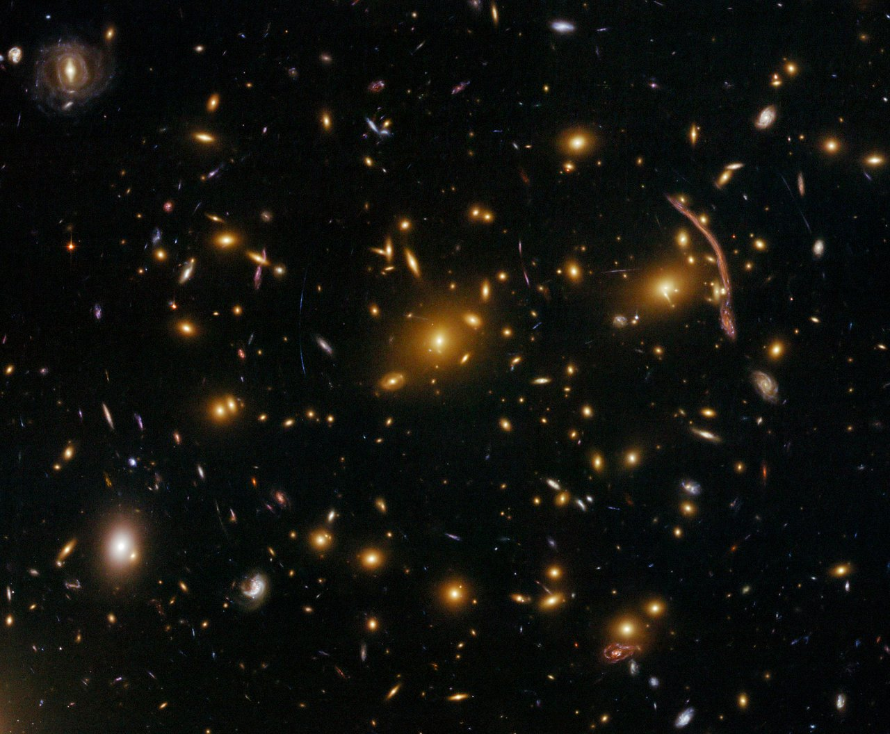

|  |
|
Olivia Curtis
I am a second year astrophysics graduate student in the Boston University Department of Astronomy and
Institute for Astrophysical Research. I received my B.S. in physics
and B.A. in Pure Mathematics from the
University of South Florida in 2018.
I study the largest gravitationally bound objects in the universe (galaxy clusters) and how they act as
lenses of light following Einstein's general theory of relativity. I work with Professor Tereasa Brainerd trying to constrain
the relative distribtuion of dark and luminous material in the universe in order to test predictions from ΛCDM simulations. I am also interested
in galaxy cluster's opposites, cosmic voids.
I am using General Adversarial Networks (GANs), a relatively new unsupervised machine learning algorithm,
to generate a mock void catalog of unprecedented size. I will use this catalog to investigate cosmic voids and
use them as a laboratory for tests of dark energy.
|
|
|
 https://orcid.org/0000-0002-0212-4563
https://orcid.org/0000-0002-0212-4563